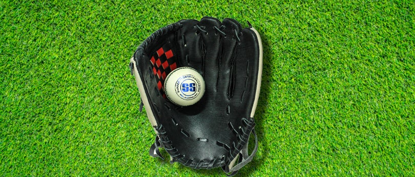
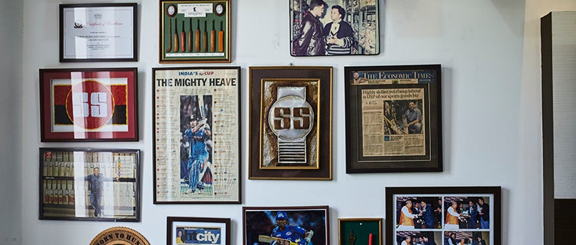

About Us
Our History
Sareen Sports Industries was started in the year 1969 by Mr. N.K. Sareen under the inspiration of his father Mr. M.L. Sareen, Sareen Sports Industries entered in the Indian market with a great hard work and dedication to launch their registered Trade-Mark SS SUNRIDGES in the year 1976. The company started export of cricket bats in 1979 to UK and Australia. Sareen Sports Industries manufacturers quality cricket equipments for meeting the requirements of national and international markets. The company also added on the production of Cricket Balls and Soft Leather Protective Equipments under the flagship of “SS SUNRIDGES” in the year 1985.
Our Vision
The company has a good share of export business in the world market exporting to Australia, UK, USA, South Africa, Canada, Sri Lanka and Bangladesh. Our company is engaged in making the product for international companies. Our product brands are TON L.E, TON ELITE, TON VA-999, TON HERITAGE, TON CAMBRIDGE. Our Sunridges SS cricket equipment is used by international players like Arvinda DeSilva, Lance Klusner, Alister Cambell, Ravindu Shah, Trevour, Hitesh Modi, Chaminda Vaas, Hassan Tilakratne and many others. Our vision is to grow with a rapid speed.